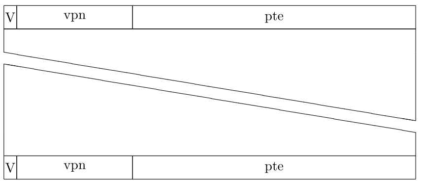
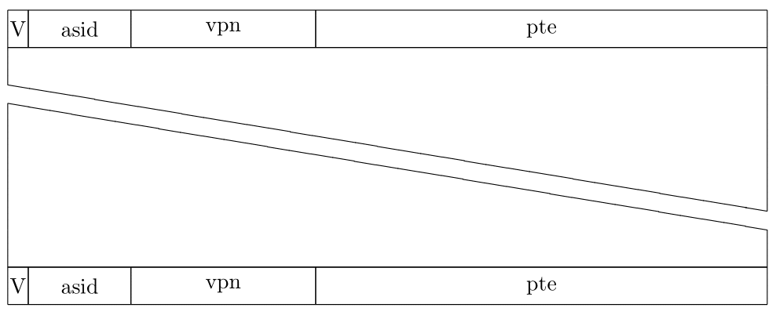

Teaching >>> Past Semesters >>> 2021-2 >>> 2021-2B Intro. to Computer Architecture >>> 2022-09-01 >>> TLB
Translation Lookaside Buffer
ובמילים אחרות, מטמון עם שם חגיגי במיוחד.
התקורה שיוצר ה-mmu די ברורה. יש גישות עודפות לזיכרון כדי לתרגם כתובת וירטואלית לכתובת פיזית. מספר הגישות העודפות הוא כמספר הרמות בטבלת התירגום. כדי להקטין את התקורה מוסיפים מטמון מיוחד שנמצא בתוך ה-mmu.
להזכירנו, מטמון הוא מילון הממומש בחומרה.
במקרה של
ה-TLB
המפתח הוא מספר דף וירטואלי והתוכן הוא כניסה מטבלת התירגום
בתנאי שהכניסה היא וולידית.
כלומר
ב-TLB
יש רק תירגומים "מוצלחים".

התנהגות ה-mmu היא די כצפוי. בקבלת כתובת וירטואלית לתירגום, יחולץ ממנה מספר הדף הוירטואלי. מספר הדף הוירטואלי ישמש כמפתח לחיפוש מהיר ב-TLB, כמו שלמדנו בפרק על המטמון. אם נמצא שם מספר הדף, אזי יש לנו את הכניסה מטבלת התירגום ואפשר לדעת מה המספר דף הפיזי (והדגלים), ואז אפשר לתרגם את הכתובת. אם מספר הדף הוירטואלי לא נמצא ב-TLB מתבצע ההילוך על טבלת התירגום, ואז אם יש תירגום מוצלח מכניסים אותו ל-TLB.
שימו לב שבניגוד למטמון הרגיל פה אין כתיבות ולכן אין משמעות ל-write back או write through. אבל בהחלט יתכן שכניסה בטבלה פעילה תשונה על-ידי מערכת ההפעלה. במצב זה יתכן וב-tlb ישאר תוכן עבש. אם אין כלים אחרים אזי אין ברירה אלא לטעון מחדש את כתובת הטבלה לאוגר ב-mmu שמצביע לטבלת התירגום. פעולה זו גורמת לריקון ה-tlb.
אם מערכת ההפעלה משנה את טבלת התירגום האקטיבית היא צריכה להודיע את זה ל-mmu כדי למחוק את הכניסה העבשה מה-tlb (אם יש כזו). זה לא יכול להתבצע אוטומטית. אם אין פקודת מכונה כזו או אוגר מתאים ב-mmu אזי עדכון של כניסה בטבלה אקטיבית יכריח ריקון של כל ה-tlb.
במעבדים בני ימינו יש פקודות מכונה או אוגר מיוחד שנותנים להם מספר דף וירטואלי והם מוחקים את הכניסה ב-tlb, אם יש כזו.
במכונות מרובות מעבדים עידכון של טבלת תירגום הוא צרה צרורה. כיון שה-tlb הוא אישי לכל מעבד אזי הימצאות של אותו תהליך על שני מעבדים שונים יצריך עידכון ה-tlb של שניהם. איזשהי צורה של תקשורת בין מעבדים תידרש במצב כזה.
באפליקציות סטנדרטיות יחס הפגיעה הוא 99.99% עד 99.999%.
יש mmu-ים שמפרידים את ה-TLB לשני מטמונים נפרדים: אחכ לקוד (ITLB) והשני לנתונים (DTLB).
החלפת הקשר כוללת בתוכה הצבעה לטבלת תירגום שמתאימה לתהליך שניכנס לריצה. זה כמובן יוצר חוסר התאמה עם המידע שנמצ ב-TLB. ההתנהגות הקלאסית במקרה זה היא ריקון ה-TLB.
לדוגמא. קלאסית ב-x86 כתיבת ערך ל-cr3 גוררת ריקון של ה-TLB. המשמעות היא שבכל החלפת הקשר, תוכנית מתחילה לרוץ בכבדות עד שמספיק תירגומים ניכנסים ל-TLB.
במשך השנים נוספו שיפורים להתנהגות הקלאסית הנ"ל. אינטל לדוגמא הוסיפה דגל ב-pte שמונע את מחיקת הכניסה אם היא ב-tlb. זה נראה קצת מוזר עד שניזכרים שהכניסות העליונות בטבלת התירגום ממפות את מערכת ההפעלה והן זהות בין כל התוכניות הרצות.
מנגנון נוסף שהוסף כאשר
ה-tlb
גדלו, הוא מזהה מרחב כתובות.
במערכת כזו יש אוגר נוסף
ב-mmu
אליו מציבים את מזהה מרחב הכתובות.
החיפוש
ב-tlb
כולל את המזהה ואת מספר הדף הוירטואלי.

השיטה מאפשרת לאפסן
ב-tlb
תירגומים של מספר תוכניות במקביל.
הרעיון הוא שאם ה-tlb
מספיק גדול, יתכן ונחזור לתהליך שנטש את המעבד
לפני שכל התירגומים
ב-tlb
ימחקו.